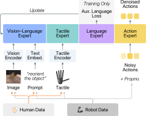

01
Box reorientation ↗
Maintain contact while rotating a box to the target orientation.

A growing body of work suggests that tactile sensing gives robot policies contact information that complements vision in dexterous manipulation. However, visuo-tactile robot data remains scarce: dexterous demonstrations require teleoperating robots, which limits dataset scale. Human demonstrations are far cheaper to collect and offer a path to scaling this data, but only if human and robot hands carry tactile sensors with corresponding signals. This requires sensors that conform to different hand geometries, cover the full hand, and share a common layout across embodiments. We present SoTa, a low-cost capacitive tactile skin that provides full-hand coverage on humans and robots while preserving a shared layout of 202 taxels across corresponding finger and palm regions. Our multilayer design with fabric electrodes enables in-house fabrication of thin, soft skins with customizable geometry for under $10 in materials per skin. The sensor retains over 97% of its initial response span after 10,000 loading-unloading cycles with traces retaining continuity through 1,280 tight-fist folding cycles. The shared taxel layout supports human-robot co-training with a common tactile encoder and no learned cross-sensor mapping. Across three contact-rich manipulation tasks, tactile observations improve in-distribution success over vision-only policies. With a fixed robot-demonstration budget, adding human demonstrations more than doubles mean success across eight evaluation conditions, from 22.8% to 45.9%, improving success in all five out-of-distribution conditions. We plan to open-source the fabrication process, hardware, and firmware.
Human and robot skins share a 202-taxel layout.

Pressure measurements span the thumb, fingers, and palm. The same readout board supports wired robot sensing and wireless human demonstrations.

The sensor retains 97.31% of its initial response span after 10,000 loading cycles at 8 N. All four tested fabric-electrode traces retain continuity through 1,280 tight-fist folding cycles.
Under $10 in skin materials, plus approximately $30 for readout electronics at a quantity of 100.
Selected successful evaluations of the full method.
Maintain contact while rotating a box to the target orientation.
Extract one thin-walled cup without lifting the stack or dropping it.
Align a plug with its socket and complete the insertion.
Select an ID or OOD object above each video. OOD objects and setups were absent from both human and robot training. Clips retain the recorded 30 fps playback; the tactile display follows the same observation frame, including when seeking. These are selected successful examples, not aggregate success rates.
The hand map shows all 202 recorded taxels in their canonical positions. Left-hand geometry is mirrored without changing channel order. Colors show the saved, processed tactile activation, not force in newtons. Every clip uses the same color scale from 0 to 0.25 (values above 0.25 saturate); the line shows the maximum activation across taxels. No per-clip normalization is applied.
Video and tactile samples are aligned by the saved observation index at 30 frames per second. This reproduces the recorded observation pairing; independent hardware-level tactile timing is not available in these trajectory files. Playback time is the video timeline, not wall-clock capture time.
The robot lifts nested cups together.
The robot separates and retrieves one cup.
Separate rollouts on the same OOD condition, with a stack 21 mm higher.
Our policy architecture is built on top of FTP-1. To incorporate human demonstrations, we use a shared tactile encoder and a training-only task-phase prediction auxiliary objective.

Representation pretraining. Human and robot demonstrations supervise task-phase prediction from visual and tactile observations. The action branch remains frozen, and no action loss is used.
Policy co-training. Robot demonstrations supervise action prediction through flow matching, while both human and robot demonstrations supervise the auxiliary task-phase objective. Human demonstrations never contribute to the action loss.
We use 75 robot demonstrations for box reorientation, 50 for cup picking, and 75 for plug insertion. Human–robot co-training adds 150 human demonstrations per task while keeping the robot demonstration budget fixed.
Mean success · all eight conditions
With the same robot demonstration budget, full human–robot co-training improves success in every reported condition—including all five out-of-distribution conditions.
40 trials per method, task, and condition. Partial completions count as failures. One training seed per method and task. ID: seen in robot training. OOD: absent from both robot and human training.
| Task / condition | Vision only | Robot + touch | Full co-training | Robot-only auxiliary | Vision-only auxiliary |
|---|
Touch improves in-distribution success on all three tasks, but touch alone does not consistently generalize to unseen objects. The vision-only auxiliary ablation removes tactile auxiliary supervision from both human and robot data, so it does not isolate the contribution of human touch alone.
Bench tests characterize loading response,
cyclic stability, and conductor durability.


Motion artifacts are not zero: the largest mean regional RMS during no-contact finger flexion was 6.18%. The paper reports the full protocol and limitations.
Human demonstrations cover three objects per task, compared with one in the robot dataset. The co-training gains are consistent with this broader contact experience supporting generalization; the evaluated OOD objects remain absent from both datasets.
Tactile input helps all three in-distribution tasks, but alone is not enough for reliable transfer to unseen cups and plugs. Shared geometry creates a useful interface, while the training distribution still matters.
The study uses one training seed per method and task, a fixed set of 150 human demonstrations per task, and short-term hardware tests. Larger and more diverse human datasets, alternative representations, long-term wear, and sustained use remain open questions.
Vision-only auxiliary learning removes touch from the auxiliary objective for both human and robot observations. It tests tactile auxiliary supervision as a whole, rather than isolating human touch. The study also does not compare against every tactile layout or processing method.
Fabrication, hardware, and firmware release planned.
{kind=link}
{kind=link}
{kind=link}